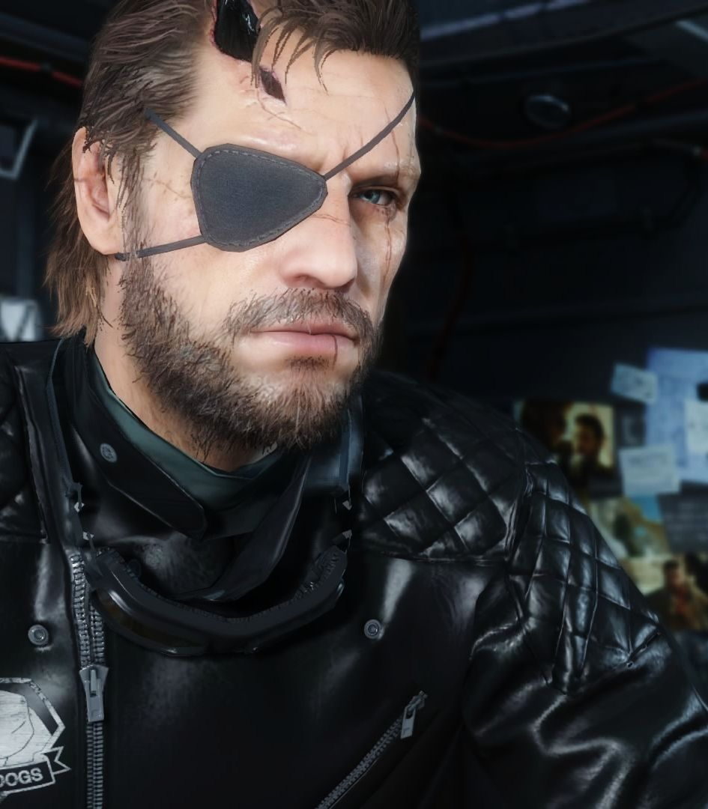

Punished Snake
A hero denied his homeland.

Punished "Venom" Snake
- Big Boss wakes up from the coma. He now has a prosthetic arm and a metal fragment in his head.
- XOF get to understand that Big Boss is held in the hospital in Cyprus. Their goal is to eliminate Big Boss and every trace of their involvement. They send Quiet to get rid of Big Boss.
- While Quiet tries to strangle Big Boss, she is interrupted by another patient called Ishmael, who eventually sets her on fire. Quiet, burst into flames, falls out of the window.
- Big Boss, with the help of Ishmael, tries to escape from the hospital. The unexpected arrival of Tretij and Man on Fire - who wants Big Boss dead - unintentionally sabotages XOF mission.
- XOF fail their mission, but manage to hide their involvement in the events. Big Boss – now also known as Venom Snake - manages to escape thanks to the help of Ocelot, who sends him to Afghanistan. His mission is to rebuild Mother Base leading their new military group called Diamond Dogs.
- Venom Snake finds and rescues Miller, who has been kept captive in a Soviet outpost.
- Venom Snake is sent in mission to find Quiet. After defeating her, he captures her and bring her to Mother Base, where she is held prisoner.
- Venom Snake finds and rescues Huey Emmerich, but they are attacked by Metal Gear Sahelanthropus, which is being controlled by Tretij. Venom Snake eventually destroys parts of the Metal Gear and manages to retreat to Mother Base.
- In the meantime Quiet starts helping Venom Snake during various missions, and the two seem to create a bond.
- Venom Snake, in the attempt to find the leader of a child soldiers group, ends up in a facility where they are conducting human experiments. After a short encounter with Skull Face, Venom Snake is attacked by Man on Fire and Tretij, but eventually manages to escape.
- Venom Snake finds Liquid Snake (known as Eli), now leader of a children soldier group. Eli is brought to Mother Base. Eli is extremely angry at his dad to the point he (unsuccesfully) tries to kill him.
- Venom Snake and Ocelot schedule DNA tests to see if Eli is his son. The tests are negative.
- A terrible epidemic spreads throughout Mother Base causing many members of the staff to die. To find a cure, Venom Snake goes on a mission to find Code Talker, who has been used by Skull Face to develop the vocal cord parasite. The parasite is said to infect only adult hosts who speak a specific language.
- Venom Snake finds and rescues Code Talker, who gives him the Wolbachia bacteria, the cure to the epidemic. Code Talker believes Skull Face intention is to use the parasite to wipe out all languages except for English as an ethnic cleanser.
- Skull Face reveals that his plan is to follow The Boss vision of the world, and he wants to achieve this by silencing the world. He actually wants to use the vocal cord parasite to infect whoever in the world speaks English.
- Eli is taken under psychic control by Tretij in order to enact his vengeance against Venom Snake. Eli manages to take control of Sahelantropus and wreak havoc on Skull Face's forces as well as on Venom Snake, who eventually manages to incapacitate the Metal Gear.
- Venom Snake and Miller find Skull Face stuck under debris. Here they take their revenge for what he did to Militaires Sans Frontieres and Mother Base, by shooting him with his own gun and detaching his left leg and right arm. Huey Emmerich eventually shoots him in the head.
- Venom Snake finds and destroys the vials that Skull Face had with him, containing the English strain of the vocal cord parasite. Nobody notices though that Tretij collected one of them before it could end up being destroyed.
- Venom Snake, Miller and Huey go back to Mother Base, bringing with them the Metal Gear Sahelanthropus. Tretij secretly gives the last vial containing the English strain of the vocal cord parasite to Eli.
- Another infection spreads on Mother Base, in the Quarantine platform. It is later revealed that Huey accidentally sparked it while using beta radiation on the Wolbachia. In order to prevent a worldwide outbreak, Venom Snake is forced to kill all the Diamond Dogs soldiers in the Quarantine platform.
- It emerges that Huey has been in contact with the DARPA (connected to Cipher) and asked to be rescued in exchange for samples of the parasites. Huey Emmerich is sent in exile out of Mother Base.
- Quiet is captured by Soviet forces. Venom Snake tracks her down and eventually rescues her. After a sand storm she disappears again, leaving an audio cassette to Venom Snake. In this, she reveals that she never spoke because she was carrying the English strain of the vocal cord parasite, but never intended to use it against him or Diamond Dogs.
- Venom Snake receives an audio cassette that reveals him his real identity and purpose. Venom Snake was the best soldier that Militaires Sans Frontieres ever had. He was the medic who went in coma with Big Boss. Under Major Zero's orders, the doctors performed plastic surgery to make him look like Big Boss, and to allow the real Big Boss to stay outside of the radars and set the foundations for what would later on become Outer Heaven. The real Big Boss was in fact Ishmael, the patient who helped Venom Snake escape from the hospital.
- Big Boss asked Ocelot to take care of Venom Snake and play along in this master plan. Through the use of hypnotherapy, Venom Snake was pushed to think he was the real Big Boss, and his incredible skills allowed everyone else around him to think the same thing. From this moment on, Venom Snake lives as the phantom of Big Boss. Big Boss is still around laying the ground work for Outer Heaven.
- Eli escapes from Mother Base together with the other child soldiers rescued so far by Diamond Dogs. Thanks to the help of Tretij he also steals the Sahelanthropus and retreats to an African island. The island is now fully contaminated by the parasite, but children are not affected by it until they become adults.
- Venom Snake infiltrates in the island, where there are already soldiers from Cipher who are sent to capture the Metal Gear. Eli activates Sahelanthropus and attacks Venom Snake who destroys it once again.
- Diamond Dogs soldiers arrive to evacuate Venom Snake since the entire island is infected with the parasite, and Eli is revealed to be infected as well.
- Tretij appears once again and with his supernatural powers removes the parasite from Eli's body. They fly away while Diamond Dogs drops napalm bombs on the island to avoid another outbreak.
Here is a list of stuff:
"Good news, you're in the land of the living. Bad news is, the whole world wants you dead."
Read more about Venom Snake and Big Boss in the Metal Gear Timeline.